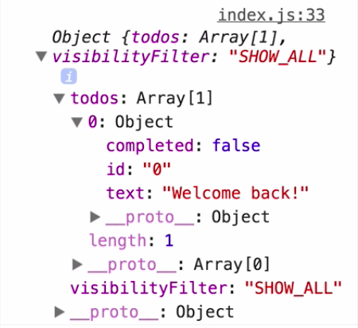

When you create the Redux store, its initial state is determined by the root reducer. In our case, the root reducer is the result of calling combineReducers on todos and visibilityFilter.
reducers/index.js
const todoApp = combineReducers({
todos,
visibilityFilter,
});Since reducers are autonomous, each of them specifies its own initial state as the default value of the state argument, so it's an empty array for the todos reducer, and it's a string saying SHOW_ALL for the visibilityFilter reducer.
visibilityFilter.js
const visibilityFilter = (state = 'SHOW_ALL' action)The initial state of the combinedReducer is going to be an object containing an empty array under the todos key, and show all string under the visibilityFilter key.
reducers/index.js
const todoApp = combineReducers({
todos,
visibilityFilter,
});This is going to become the initial state of this store, so if we log the current state of the store right after it's graded, we're going to see this object in the console.

index.js
const store = createStore(todoApp);
console.log(store.getState());However, sometimes we want to load some existing data into the app synchronously before it starts. For example, we might have persistent todos from the previous session, and we might want to load this slice of the state into the app right before it starts.
index.js
const persistedState = {
todos: [{
id: '0',
text: 'Welcome back!',
completed: false,
}],
};Redux lets me pass the persistentState as the second argument to the createStore function, and it will override the value specified by the reducers. If I refresh, I can see that the todos array now has a single item that I specified.

index.js
const store = createStore(
todoApp,
persistedState
);However, the visibilityFilter value is still there, and it's still the default value specified by the reducer because it is not in my persistentState object, so the reducer takes control.
Let's recap and see why this happens. Whatever value we pass to createStore as a second argument is going to end up in the root reducer as the state argument instead of undefined.
reducers/index.js
const todoApp = combineReducers({
todos,
visibilityFilter,
});The combineReducers implementation just forwards the parts of the state to the relevant reducers by their names. This is why the part of the persistentState with the key todos is going to end up as the state object the first time the todos reducer is called instead of undefined.
todos.js
const todos = (state = [], action) => {Since the state is not undefined, the default argument syntax has no effect, so state stays an array with one item. When Redux initializes the store, it sends an action that won't match any of your custom action types.
todos.js
switch (action.type) {
case 'ADD_TODO':
return [
...state,
todo(undefined, action),
];
case 'TOGGLE_TODO':
return state.map(t =>
todo(t, action)
);
default:
return state;
}
};Your reducer is going to fall through to the default case and return the state that it received, and in this case, this state object is the array with one item that we supplied here.
index.js
const persistedState = {
todos: [{
id: '0',
text: 'Welcome back!',
completed: false,
}],
};However, the visibilityFilter key is not present on the persistentState object, so the parent reducer sees undefined there, and it passes undefined as a state argument to the visibilityFilter reducer.
visibilityFilter.js
const visibilityFilter = (state = 'SHOW_ALL' action)Since the state it receives is undefined, it uses the default argument as specified with ES6 default argument syntax. Just like inside the todos reducer, the action type is not going to match any of the known action types, so it will fall through to the defaultcase and return state.
But notice that in this case, the state was initialized to 'SHOW_ALL' because it was initially undefined, and so the ES6 default argument syntax kicked in. This explains why the combinedReducer returned the initial state containing both the todos that we supplied and the VisibilityFilter supplied by the reducer by default.
You might get tempted to specify all the initial state tree of your app in a single place and pass it to createStore, but we don't recommend this. Co-locating the initial state with the reducer definition makes it easy to test and change, so you should always strive to do that.
However, you can use the second argument to create store for hydrating persistent data into the store, because it was obtained from Redux itself, so it doesn't break encapsulation of reducers.